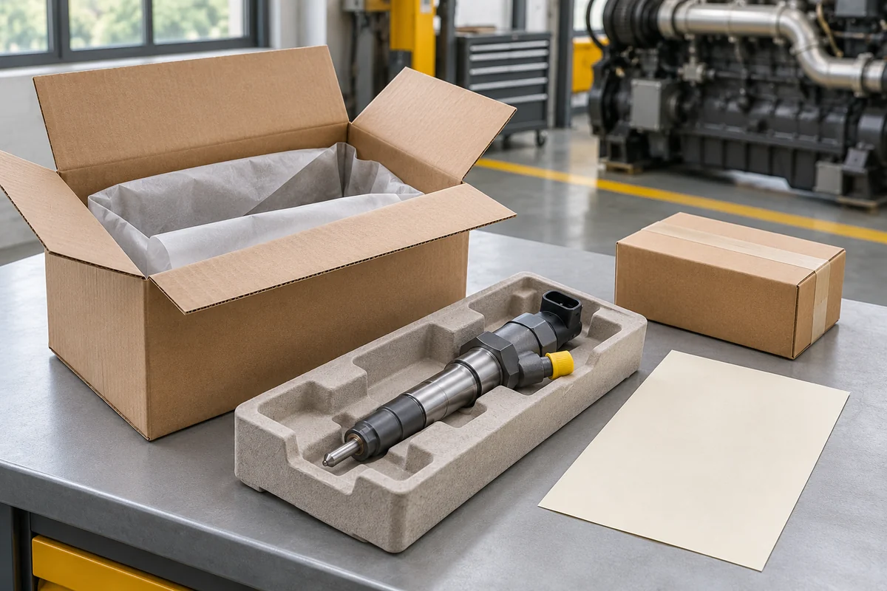

Запчасти приехали: как передать поставку в ремонт без путаницы

Коробка получена, а механик спрашивает, где его деталь. Внутри несколько позиций для разных машин, одна строка пришла частично, остальное ещё в пути. Чтобы поставка не потерялась между складом и ремонтом, при получении стоит связать каждую позицию с заказом и будущим получателем.
Организуйте приёмку так, чтобы после неё оставалась понятная запись: что приехало, для какой работы предназначено и что ещё нужно выяснить. Тогда выдача детали не будет зависеть от памяти человека, который разбирал коробку.
Сначала сопоставьте отправление с заказом
Подготовьте согласованный список и сведения о составе посылки. Если поставщик предупреждал о частичной отправке, сравнивайте полученное именно с этой частью заказа. Недостающая позиция может относиться к следующему отправлению, но это должно подтверждаться перепиской или документами.
При видимом повреждении упаковки действуйте по правилам приёмки перевозчика и зафиксируйте состояние до дальнейшей распаковки. Требования и сроки обращения зависят от перевозчика и условий поставки; лучше заранее знать, где они указаны.
После вскрытия проверьте количество и доступную маркировку по строкам заказа. Не смешивайте одинаково выглядящие детали из разных коробок, пока не выяснили, какие номера и количества относятся к каждой позиции.
Сохраняйте связь между деталью и документами
Коробка, вложенная этикетка и сама деталь могут содержать сведения, которые понадобятся при уточнении поставки. Сохраните их вместе до завершения приёмки. Аккуратная упаковка сама по себе не подтверждает подлинность или применимость запчасти.
Допустим, пришли две внешне похожие позиции для разных машин. Если сразу убрать упаковку и сложить их в один ящик, позднее придётся восстанавливать происхождение каждой. Удобнее выделить отдельное место под каждую внутреннюю заявку и приложить к ней копию нужной строки заказа. Не закрывайте собственной наклейкой заводскую маркировку.
Запишите расхождение так, чтобы на него можно было ответить
Сообщение "пришла не та деталь" оставляет поставщику много вопросов. Укажите номер заказа, спорную строку, согласованное количество и фактически полученное. Приложите читаемые фотографии маркировки и упаковки, если они помогают показать расхождение.
Например, в сообщении можно написать: "По этой строке согласованы две штуки, получена одна; уточните, относится ли вторая к следующему отправлению". Такой вопрос позволяет проверить конкретное событие. Не нужно сразу объяснять его ошибкой склада или перевозчика, если причина пока неизвестна.
До выяснения спорную позицию храните отдельно. Не устанавливайте и не разбирайте её ради сравнения: сначала согласуйте дальнейшие действия с поставщиком и ответственным за ремонт.
Передайте в ремонт вместе с контекстом
При выдаче укажите машину, внутреннюю заявку, количество и основание подбора. Если для ремонта заранее согласовали особое исполнение или определённый состав поставки, передайте эти сведения механику вместе с документами. Не рассчитывайте, что он видел всю закупочную переписку.
Получатель должен понимать, какая часть заявки закрыта. Если пришёл насос, а отдельная позиция ещё ожидается, это стоит явно записать. Наличие одной детали не подтверждает готовность всего набора к работе.
Установку и необходимые процедуры определяет специалист по документации соответствующей системы. Приёмка на складе помогает сохранить состав и историю поставки, но не заменяет проверку применимости и техническую подготовку к монтажу.
Закройте заявку по фактически выданному
После передачи отметьте дату, количество и получателя. Ожидаемые позиции оставьте открытыми, а вопросы по расхождениям держите рядом с заказом. Тогда при следующем обращении будет видно, что уже находится в ремонте, что осталось на складе и чего ещё не хватает.
Для будущих поставок заранее уточняйте условия доставки. По заказу СМ ТЕХНО можно связаться с поставщиком, указав его номер и конкретную позицию. Чем точнее сохранена связь между заявкой, посылкой и получателем, тем проще решить вопрос без повторной сверки всего заказа.